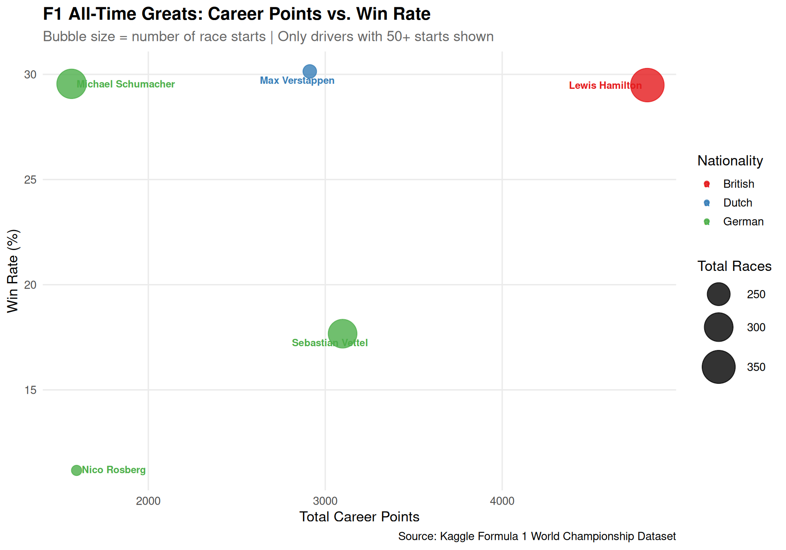
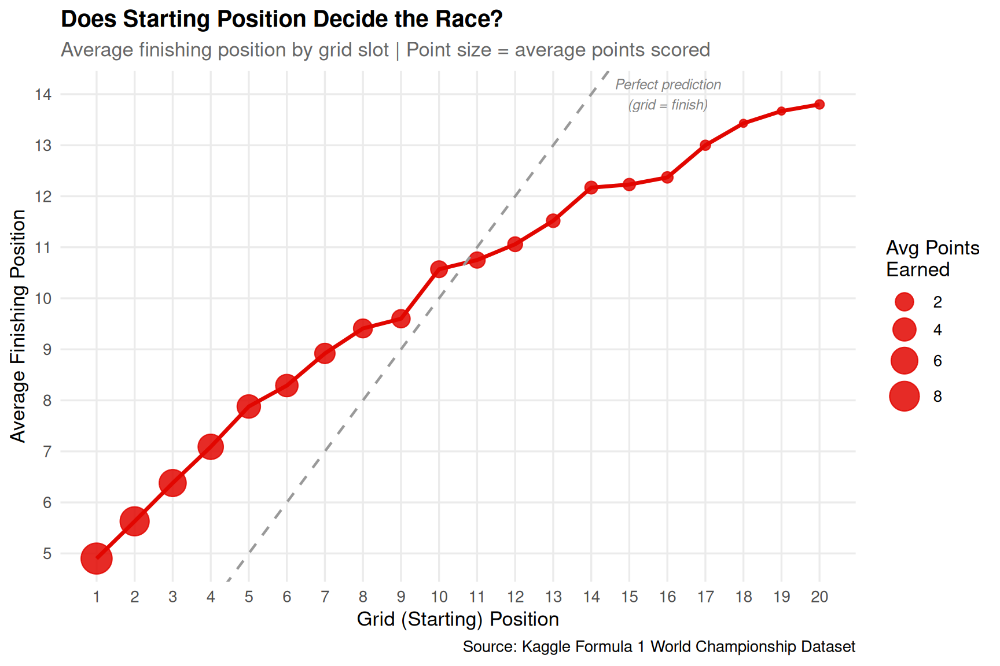
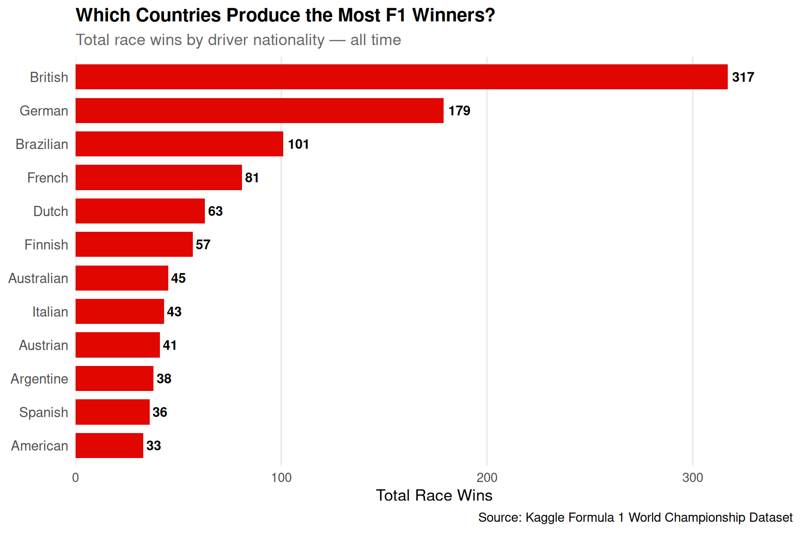
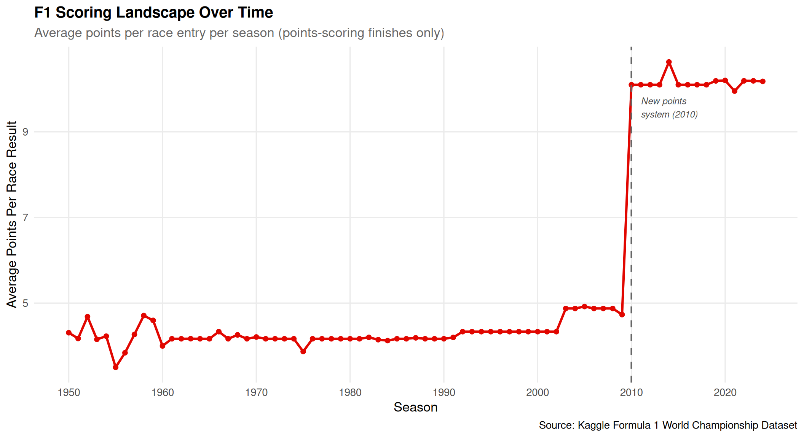

con_f1 <- dbConnect(duckdb::duckdb(), dbdir = "f1_db")F1 analysis
Brief Project Overview
For this project, we used the Formula 1 dataset from Kaggle that includes races, drivers, and results (and others), to see how performance patterns in F1 have changed over time. We were interested in knowing about driver success, team dominance, starting grid advantage, international diversity and how the scoring system shaped results across seasons.
We somewhat follow the flow we have learnt in class by started with basically importing the CSV files, creating relational tables in DuckDB, and then checking the structure of each table before writing queries. From there, we used SQL to join tables, group data, and calculate summary measures that helped us answer each question. Finally, we pulled selected query results into R and used ggplot2 to create visualizations that made it easier to compare and interpret the patterns.
SHOW TABLES;| name |
|---|
| drivers |
| races |
| results |
—————————————————————————
Accessing data
races <- readr::read_csv("races.csv")Rows: 1125 Columns: 18
── Column specification ────────────────────────────────────────────────────────
Delimiter: ","
chr (13): name, time, url, fp1_date, fp1_time, fp2_date, fp2_time, fp3_date...
dbl (4): raceId, year, round, circuitId
date (1): date
ℹ Use `spec()` to retrieve the full column specification for this data.
ℹ Specify the column types or set `show_col_types = FALSE` to quiet this message.drivers <- readr::read_csv("drivers.csv")Rows: 861 Columns: 9
── Column specification ────────────────────────────────────────────────────────
Delimiter: ","
chr (7): driverRef, number, code, forename, surname, nationality, url
dbl (1): driverId
date (1): dob
ℹ Use `spec()` to retrieve the full column specification for this data.
ℹ Specify the column types or set `show_col_types = FALSE` to quiet this message.results <- readr::read_csv("results.csv")Warning: One or more parsing issues, call `problems()` on your data frame for details,
e.g.:
dat <- vroom(...)
problems(dat)Rows: 26759 Columns: 18
── Column specification ────────────────────────────────────────────────────────
Delimiter: ","
chr (8): position, positionText, time, milliseconds, fastestLap, rank, fast...
dbl (10): resultId, raceId, driverId, constructorId, number, grid, positionO...
ℹ Use `spec()` to retrieve the full column specification for this data.
ℹ Specify the column types or set `show_col_types = FALSE` to quiet this message.glimpse(races)Rows: 1,125
Columns: 18
$ raceId <dbl> 1, 2, 3, 4, 5, 6, 7, 8, 9, 10, 11, 12, 13, 14, 15, 16, 17,…
$ year <dbl> 2009, 2009, 2009, 2009, 2009, 2009, 2009, 2009, 2009, 2009…
$ round <dbl> 1, 2, 3, 4, 5, 6, 7, 8, 9, 10, 11, 12, 13, 14, 15, 16, 17,…
$ circuitId <dbl> 1, 2, 17, 3, 4, 6, 5, 9, 20, 11, 12, 13, 14, 15, 22, 18, 2…
$ name <chr> "Australian Grand Prix", "Malaysian Grand Prix", "Chinese …
$ date <date> 2009-03-29, 2009-04-05, 2009-04-19, 2009-04-26, 2009-05-1…
$ time <chr> "06:00:00", "09:00:00", "07:00:00", "12:00:00", "12:00:00"…
$ url <chr> "http://en.wikipedia.org/wiki/2009_Australian_Grand_Prix",…
$ fp1_date <chr> "\\N", "\\N", "\\N", "\\N", "\\N", "\\N", "\\N", "\\N", "\…
$ fp1_time <chr> "\\N", "\\N", "\\N", "\\N", "\\N", "\\N", "\\N", "\\N", "\…
$ fp2_date <chr> "\\N", "\\N", "\\N", "\\N", "\\N", "\\N", "\\N", "\\N", "\…
$ fp2_time <chr> "\\N", "\\N", "\\N", "\\N", "\\N", "\\N", "\\N", "\\N", "\…
$ fp3_date <chr> "\\N", "\\N", "\\N", "\\N", "\\N", "\\N", "\\N", "\\N", "\…
$ fp3_time <chr> "\\N", "\\N", "\\N", "\\N", "\\N", "\\N", "\\N", "\\N", "\…
$ quali_date <chr> "\\N", "\\N", "\\N", "\\N", "\\N", "\\N", "\\N", "\\N", "\…
$ quali_time <chr> "\\N", "\\N", "\\N", "\\N", "\\N", "\\N", "\\N", "\\N", "\…
$ sprint_date <chr> "\\N", "\\N", "\\N", "\\N", "\\N", "\\N", "\\N", "\\N", "\…
$ sprint_time <chr> "\\N", "\\N", "\\N", "\\N", "\\N", "\\N", "\\N", "\\N", "\…glimpse(drivers)Rows: 861
Columns: 9
$ driverId <dbl> 1, 2, 3, 4, 5, 6, 7, 8, 9, 10, 11, 12, 13, 14, 15, 16, 17,…
$ driverRef <chr> "hamilton", "heidfeld", "rosberg", "alonso", "kovalainen",…
$ number <chr> "44", "\\N", "6", "14", "\\N", "\\N", "\\N", "7", "88", "\…
$ code <chr> "HAM", "HEI", "ROS", "ALO", "KOV", "NAK", "BOU", "RAI", "K…
$ forename <chr> "Lewis", "Nick", "Nico", "Fernando", "Heikki", "Kazuki", "…
$ surname <chr> "Hamilton", "Heidfeld", "Rosberg", "Alonso", "Kovalainen",…
$ dob <date> 1985-01-07, 1977-05-10, 1985-06-27, 1981-07-29, 1981-10-1…
$ nationality <chr> "British", "German", "German", "Spanish", "Finnish", "Japa…
$ url <chr> "http://en.wikipedia.org/wiki/Lewis_Hamilton", "http://en.…glimpse(results)Rows: 26,759
Columns: 18
$ resultId <dbl> 1, 2, 3, 4, 5, 6, 7, 8, 9, 10, 11, 12, 13, 14, 15, 16,…
$ raceId <dbl> 18, 18, 18, 18, 18, 18, 18, 18, 18, 18, 18, 18, 18, 18…
$ driverId <dbl> 1, 2, 3, 4, 5, 6, 7, 8, 9, 10, 11, 12, 13, 14, 15, 16,…
$ constructorId <dbl> 1, 2, 3, 4, 1, 3, 5, 6, 2, 7, 8, 4, 6, 9, 7, 10, 9, 11…
$ number <dbl> 22, 3, 7, 5, 23, 8, 14, 1, 4, 12, 18, 6, 2, 9, 11, 20,…
$ grid <dbl> 1, 5, 7, 11, 3, 13, 17, 15, 2, 18, 19, 20, 4, 8, 6, 22…
$ position <chr> "1", "2", "3", "4", "5", "6", "7", "8", "\\N", "\\N", …
$ positionText <chr> "1", "2", "3", "4", "5", "6", "7", "8", "R", "R", "R",…
$ positionOrder <dbl> 1, 2, 3, 4, 5, 6, 7, 8, 9, 10, 11, 12, 13, 14, 15, 16,…
$ points <dbl> 10, 8, 6, 5, 4, 3, 2, 1, 0, 0, 0, 0, 0, 0, 0, 0, 0, 0,…
$ laps <dbl> 58, 58, 58, 58, 58, 57, 55, 53, 47, 43, 32, 30, 29, 25…
$ time <chr> "1:34:50.616", "+5.478", "+8.163", "+17.181", "+18.014…
$ milliseconds <chr> "5690616", "5696094", "5698779", "5707797", "5708630",…
$ fastestLap <chr> "39", "41", "41", "58", "43", "50", "54", "20", "15", …
$ rank <chr> "2", "3", "5", "7", "1", "14", "8", "4", "9", "13", "1…
$ fastestLapTime <chr> "1:27.452", "1:27.739", "1:28.090", "1:28.603", "1:27.…
$ fastestLapSpeed <chr> "218.300", "217.586", "216.719", "215.464", "218.385",…
$ statusId <dbl> 1, 1, 1, 1, 1, 11, 5, 5, 4, 3, 7, 8, 5, 4, 10, 9, 4, 4…—————————————————————————
Designing the database
DROP TABLE IF EXISTS races;CREATE TABLE races (
raceId INTEGER,
year INTEGER,
round INTEGER,
circuitId INTEGER,
name VARCHAR,
date VARCHAR,
time VARCHAR,
url VARCHAR,
fp1_date VARCHAR,
fp1_time VARCHAR,
fp2_date VARCHAR,
fp2_time VARCHAR,
fp3_date VARCHAR,
fp3_time VARCHAR,
quali_date VARCHAR,
quali_time VARCHAR,
sprint_date VARCHAR,
sprint_time VARCHAR);
COPY races
FROM 'races.csv'
(FORMAT CSV, HEADER, NULL '\N');DROP TABLE IF EXISTS drivers;CREATE TABLE drivers (
driverId INTEGER,
driverRef VARCHAR,
number VARCHAR,
code VARCHAR,
forename VARCHAR,
surname VARCHAR,
dob VARCHAR,
nationality VARCHAR,
url VARCHAR
);
COPY drivers
FROM 'drivers.csv'
(FORMAT CSV, HEADER, NULL '\N');DROP TABLE IF EXISTS results;CREATE TABLE results (
resultId INTEGER,
raceId INTEGER,
driverId INTEGER,
constructorId INTEGER,
number INTEGER,
grid INTEGER,
position VARCHAR,
positionText VARCHAR,
positionOrder INTEGER,
points DOUBLE,
laps INTEGER,
time VARCHAR,
milliseconds VARCHAR,
fastestLap VARCHAR,
rank VARCHAR,
fastestLapTime VARCHAR,
fastestLapSpeed VARCHAR,
statusId INTEGER);
COPY results
FROM 'results.csv'
(FORMAT CSV, HEADER, NULL '\N');SHOW TABLES;| name |
|---|
| drivers |
| races |
| results |
DESCRIBE races;| column_name | column_type | null | key | default | extra |
|---|---|---|---|---|---|
| raceId | INTEGER | YES | NA | NA | NA |
| year | INTEGER | YES | NA | NA | NA |
| round | INTEGER | YES | NA | NA | NA |
| circuitId | INTEGER | YES | NA | NA | NA |
| name | VARCHAR | YES | NA | NA | NA |
| date | VARCHAR | YES | NA | NA | NA |
| time | VARCHAR | YES | NA | NA | NA |
| url | VARCHAR | YES | NA | NA | NA |
| fp1_date | VARCHAR | YES | NA | NA | NA |
| fp1_time | VARCHAR | YES | NA | NA | NA |
DESCRIBE drivers;| column_name | column_type | null | key | default | extra |
|---|---|---|---|---|---|
| driverId | INTEGER | YES | NA | NA | NA |
| driverRef | VARCHAR | YES | NA | NA | NA |
| number | VARCHAR | YES | NA | NA | NA |
| code | VARCHAR | YES | NA | NA | NA |
| forename | VARCHAR | YES | NA | NA | NA |
| surname | VARCHAR | YES | NA | NA | NA |
| dob | VARCHAR | YES | NA | NA | NA |
| nationality | VARCHAR | YES | NA | NA | NA |
| url | VARCHAR | YES | NA | NA | NA |
DESCRIBE results;| column_name | column_type | null | key | default | extra |
|---|---|---|---|---|---|
| resultId | INTEGER | YES | NA | NA | NA |
| raceId | INTEGER | YES | NA | NA | NA |
| driverId | INTEGER | YES | NA | NA | NA |
| constructorId | INTEGER | YES | NA | NA | NA |
| number | INTEGER | YES | NA | NA | NA |
| grid | INTEGER | YES | NA | NA | NA |
| position | VARCHAR | YES | NA | NA | NA |
| positionText | VARCHAR | YES | NA | NA | NA |
| positionOrder | INTEGER | YES | NA | NA | NA |
| points | DOUBLE | YES | NA | NA | NA |
SELECT * FROM races LIMIT 10;| raceId | year | round | circuitId | name | date | time | url | fp1_date | fp1_time | fp2_date | fp2_time | fp3_date | fp3_time | quali_date | quali_time | sprint_date | sprint_time |
|---|---|---|---|---|---|---|---|---|---|---|---|---|---|---|---|---|---|
| 1 | 2009 | 1 | 1 | Australian Grand Prix | 2009-03-29 | 06:00:00 | http://en.wikipedia.org/wiki/2009_Australian_Grand_Prix | NA | NA | NA | NA | NA | NA | NA | NA | NA | NA |
| 2 | 2009 | 2 | 2 | Malaysian Grand Prix | 2009-04-05 | 09:00:00 | http://en.wikipedia.org/wiki/2009_Malaysian_Grand_Prix | NA | NA | NA | NA | NA | NA | NA | NA | NA | NA |
| 3 | 2009 | 3 | 17 | Chinese Grand Prix | 2009-04-19 | 07:00:00 | http://en.wikipedia.org/wiki/2009_Chinese_Grand_Prix | NA | NA | NA | NA | NA | NA | NA | NA | NA | NA |
| 4 | 2009 | 4 | 3 | Bahrain Grand Prix | 2009-04-26 | 12:00:00 | http://en.wikipedia.org/wiki/2009_Bahrain_Grand_Prix | NA | NA | NA | NA | NA | NA | NA | NA | NA | NA |
| 5 | 2009 | 5 | 4 | Spanish Grand Prix | 2009-05-10 | 12:00:00 | http://en.wikipedia.org/wiki/2009_Spanish_Grand_Prix | NA | NA | NA | NA | NA | NA | NA | NA | NA | NA |
| 6 | 2009 | 6 | 6 | Monaco Grand Prix | 2009-05-24 | 12:00:00 | http://en.wikipedia.org/wiki/2009_Monaco_Grand_Prix | NA | NA | NA | NA | NA | NA | NA | NA | NA | NA |
| 7 | 2009 | 7 | 5 | Turkish Grand Prix | 2009-06-07 | 12:00:00 | http://en.wikipedia.org/wiki/2009_Turkish_Grand_Prix | NA | NA | NA | NA | NA | NA | NA | NA | NA | NA |
| 8 | 2009 | 8 | 9 | British Grand Prix | 2009-06-21 | 12:00:00 | http://en.wikipedia.org/wiki/2009_British_Grand_Prix | NA | NA | NA | NA | NA | NA | NA | NA | NA | NA |
| 9 | 2009 | 9 | 20 | German Grand Prix | 2009-07-12 | 12:00:00 | http://en.wikipedia.org/wiki/2009_German_Grand_Prix | NA | NA | NA | NA | NA | NA | NA | NA | NA | NA |
| 10 | 2009 | 10 | 11 | Hungarian Grand Prix | 2009-07-26 | 12:00:00 | http://en.wikipedia.org/wiki/2009_Hungarian_Grand_Prix | NA | NA | NA | NA | NA | NA | NA | NA | NA | NA |
SELECT * FROM drivers LIMIT 10;| driverId | driverRef | number | code | forename | surname | dob | nationality | url |
|---|---|---|---|---|---|---|---|---|
| 1 | hamilton | 44 | HAM | Lewis | Hamilton | 1985-01-07 | British | http://en.wikipedia.org/wiki/Lewis_Hamilton |
| 2 | heidfeld | NA | HEI | Nick | Heidfeld | 1977-05-10 | German | http://en.wikipedia.org/wiki/Nick_Heidfeld |
| 3 | rosberg | 6 | ROS | Nico | Rosberg | 1985-06-27 | German | http://en.wikipedia.org/wiki/Nico_Rosberg |
| 4 | alonso | 14 | ALO | Fernando | Alonso | 1981-07-29 | Spanish | http://en.wikipedia.org/wiki/Fernando_Alonso |
| 5 | kovalainen | NA | KOV | Heikki | Kovalainen | 1981-10-19 | Finnish | http://en.wikipedia.org/wiki/Heikki_Kovalainen |
| 6 | nakajima | NA | NAK | Kazuki | Nakajima | 1985-01-11 | Japanese | http://en.wikipedia.org/wiki/Kazuki_Nakajima |
| 7 | bourdais | NA | BOU | Sébastien | Bourdais | 1979-02-28 | French | http://en.wikipedia.org/wiki/S%C3%A9bastien_Bourdais |
| 8 | raikkonen | 7 | RAI | Kimi | Räikkönen | 1979-10-17 | Finnish | http://en.wikipedia.org/wiki/Kimi_R%C3%A4ikk%C3%B6nen |
| 9 | kubica | 88 | KUB | Robert | Kubica | 1984-12-07 | Polish | http://en.wikipedia.org/wiki/Robert_Kubica |
| 10 | glock | NA | GLO | Timo | Glock | 1982-03-18 | German | http://en.wikipedia.org/wiki/Timo_Glock |
SELECT * FROM results LIMIT 10;| resultId | raceId | driverId | constructorId | number | grid | position | positionText | positionOrder | points | laps | time | milliseconds | fastestLap | rank | fastestLapTime | fastestLapSpeed | statusId |
|---|---|---|---|---|---|---|---|---|---|---|---|---|---|---|---|---|---|
| 1 | 18 | 1 | 1 | 22 | 1 | 1 | 1 | 1 | 10 | 58 | 1:34:50.616 | 5690616 | 39 | 2 | 1:27.452 | 218.300 | 1 |
| 2 | 18 | 2 | 2 | 3 | 5 | 2 | 2 | 2 | 8 | 58 | +5.478 | 5696094 | 41 | 3 | 1:27.739 | 217.586 | 1 |
| 3 | 18 | 3 | 3 | 7 | 7 | 3 | 3 | 3 | 6 | 58 | +8.163 | 5698779 | 41 | 5 | 1:28.090 | 216.719 | 1 |
| 4 | 18 | 4 | 4 | 5 | 11 | 4 | 4 | 4 | 5 | 58 | +17.181 | 5707797 | 58 | 7 | 1:28.603 | 215.464 | 1 |
| 5 | 18 | 5 | 1 | 23 | 3 | 5 | 5 | 5 | 4 | 58 | +18.014 | 5708630 | 43 | 1 | 1:27.418 | 218.385 | 1 |
| 6 | 18 | 6 | 3 | 8 | 13 | 6 | 6 | 6 | 3 | 57 | NA | NA | 50 | 14 | 1:29.639 | 212.974 | 11 |
| 7 | 18 | 7 | 5 | 14 | 17 | 7 | 7 | 7 | 2 | 55 | NA | NA | 54 | 8 | 1:29.534 | 213.224 | 5 |
| 8 | 18 | 8 | 6 | 1 | 15 | 8 | 8 | 8 | 1 | 53 | NA | NA | 20 | 4 | 1:27.903 | 217.180 | 5 |
| 9 | 18 | 9 | 2 | 4 | 2 | NA | R | 9 | 0 | 47 | NA | NA | 15 | 9 | 1:28.753 | 215.100 | 4 |
| 10 | 18 | 10 | 7 | 12 | 18 | NA | R | 10 | 0 | 43 | NA | NA | 23 | 13 | 1:29.558 | 213.166 | 3 |
—————————————————————————
We wanted to identify the drivers who have had the strongest overall careers in terms of points. This combines driver information with race results and summarizes each driver’s total races, total points, and best single-race score. This allows us to seee which drivers have been the most productive over time.
SELECT
d.forename || ' ' || d.surname AS driver_name,
-- combine first and last name into one column
d.nationality,
COUNT(r.raceId) AS total_races,
-- count how many races each driver entered
SUM(r.points) AS total_points,
-- sum all points scored across career
MAX(r.points) AS best_race_points
-- highest single-race points score
FROM results AS r
JOIN drivers AS d ON r.driverId = d.driverId
-- join results to drivers using the shared driverId key
WHERE r.points IS NOT NULL
GROUP BY d.driverRef, d.forename, d.surname, d.nationality
ORDER BY total_points DESC
LIMIT 10;| driver_name | nationality | total_races | total_points | best_race_points |
|---|---|---|---|---|
| Lewis Hamilton | British | 356 | 4820.5 | 50 |
| Sebastian Vettel | German | 300 | 3098.0 | 25 |
| Max Verstappen | Dutch | 209 | 2912.5 | 26 |
| Fernando Alonso | Spanish | 404 | 2329.0 | 25 |
| Kimi Räikkönen | Finnish | 352 | 1873.0 | 25 |
| Valtteri Bottas | Finnish | 247 | 1788.0 | 30 |
| Nico Rosberg | German | 206 | 1594.5 | 25 |
| Sergio Pérez | Mexican | 283 | 1585.0 | 25 |
| Michael Schumacher | German | 308 | 1566.0 | 15 |
| Charles Leclerc | Monegasque | 149 | 1363.0 | 26 |
We were interested in seeing how team success shifted across different periods of Formula 1 history. So this categorizes race results into decades and adds up the total points earned by each constructor in each era. It also shows how many different drivers each constructor used, which helps us compare dominance over time.
SELECT
res.constructorId,
CASE
WHEN ra.year BETWEEN 1950 AND 1959 THEN '1950s'
WHEN ra.year BETWEEN 1960 AND 1969 THEN '1960s'
WHEN ra.year BETWEEN 1970 AND 1979 THEN '1970s'
WHEN ra.year BETWEEN 1980 AND 1989 THEN '1980s'
WHEN ra.year BETWEEN 1990 AND 1999 THEN '1990s'
WHEN ra.year BETWEEN 2000 AND 2009 THEN '2000s'
WHEN ra.year BETWEEN 2010 AND 2019 THEN '2010s'
ELSE '2020s'
END AS decade,
-- bucket each race year into its decade using CASE
SUM(res.points) AS total_points,
COUNT(DISTINCT res.driverId) AS drivers_used
-- how many different drivers the constructor fielded per decade
FROM results AS res
JOIN races AS ra ON res.raceId = ra.raceId
WHERE res.points IS NOT NULL
GROUP BY res.constructorId, decade
ORDER BY decade, total_points DESC;| constructorId | decade | total_points | drivers_used |
|---|---|---|---|
| 6 | 1950s | 754.27 | 48 |
| 105 | 1950s | 313.14 | 87 |
| 51 | 1950s | 164.00 | 9 |
| 131 | 1950s | 139.14 | 7 |
| 113 | 1950s | 130.00 | 85 |
| 118 | 1950s | 108.00 | 12 |
| 170 | 1950s | 97.50 | 19 |
| 87 | 1950s | 52.00 | 35 |
| 66 | 1950s | 48.50 | 16 |
| 108 | 1950s | 40.00 | 7 |
Here we compared drivers by how often they turned a race start into a win. It counts each driver’s total starts and total wins, then calculates a win rate from those two values. To keep the results more meaningful, we only included drivers who had at least 50 career starts.
SELECT
d.forename || ' ' || d.surname AS driver_name,
-- combine first and last name
d.nationality,
COUNT(*) AS total_starts,
-- total number of race starts
SUM(CASE WHEN res.positionOrder = 1 THEN 1 ELSE 0 END) AS wins,
-- count race wins
ROUND(100.0 * SUM(CASE WHEN res.positionOrder = 1 THEN 1 ELSE 0 END) / COUNT(*), 2) AS win_rate_pct
-- wins as a percentage of starts
FROM results AS res
JOIN drivers AS d ON res.driverId = d.driverId
-- join to get driver names since results only stores driverId numbers
GROUP BY d.driverRef, d.forename, d.surname, d.nationality
HAVING COUNT(*) >= 50
-- only include drivers with at least 50 starts
ORDER BY win_rate_pct DESC
LIMIT 15;| driver_name | nationality | total_starts | wins | win_rate_pct |
|---|---|---|---|---|
| Juan Fangio | Argentine | 58 | 24 | 41.38 |
| Jim Clark | British | 73 | 25 | 34.25 |
| Max Verstappen | Dutch | 209 | 63 | 30.14 |
| Michael Schumacher | German | 308 | 91 | 29.55 |
| Lewis Hamilton | British | 356 | 105 | 29.49 |
| Jackie Stewart | British | 100 | 27 | 27.00 |
| Ayrton Senna | Brazilian | 162 | 41 | 25.31 |
| Alain Prost | French | 202 | 51 | 25.25 |
| Stirling Moss | British | 73 | 16 | 21.92 |
| Damon Hill | British | 122 | 22 | 18.03 |
This shows how much starting position shapes the way a race finishes. It groups drivers by grid position and calculates their average finishing position and average points earned. Through this we can figure out whether starting closer to the front tends to lead to stronger race results.
SELECT
res.grid AS grid_position,
-- starting position on the grid
COUNT(*) AS total_occurrences,
-- number of results from this grid slot
ROUND(AVG(res.positionOrder), 2) AS avg_finish_position,
-- average finishing position
ROUND(AVG(res.points), 2) AS avg_points_earned
-- average points scored
FROM results AS res
WHERE res.grid BETWEEN 1 AND 20
AND res.positionOrder BETWEEN 1 AND 20
-- keep standard race positions only
GROUP BY res.grid
-- group all results together that share the same starting grid position
ORDER BY grid_position;
-- sort from pole position (1) down to last (20)| grid_position | total_occurrences | avg_finish_position | avg_points_earned |
|---|---|---|---|
| 1 | 1089 | 4.90 | 8.97 |
| 2 | 1062 | 5.63 | 7.55 |
| 3 | 1054 | 6.38 | 6.22 |
| 4 | 1051 | 7.09 | 5.18 |
| 5 | 1039 | 7.88 | 4.15 |
| 6 | 1026 | 8.29 | 3.66 |
| 7 | 1043 | 8.92 | 2.75 |
| 8 | 1021 | 9.41 | 2.22 |
| 9 | 1030 | 9.60 | 2.01 |
| 10 | 1026 | 10.57 | 1.56 |
We were interested in looking at how Formula 1 became more international over time. It joins race results, driver information, and season data, then groups each race into a broader era. For each era, it counts how many different nationalities, drivers, and races appeared.
SELECT
CASE
WHEN ra.year BETWEEN 1950 AND 1969 THEN 'Early Era (1950-1969)'
WHEN ra.year BETWEEN 1970 AND 1989 THEN 'Mid Era (1970-1989)'
WHEN ra.year BETWEEN 1990 AND 2009 THEN 'Modern Era (1990-2009)'
ELSE 'Hybrid Era (2010+)'
END AS era,
-- group seasons into broader eras
COUNT(DISTINCT d.nationality) AS unique_nationalities,
-- number of driver nationalities
COUNT(DISTINCT d.driverId) AS unique_drivers,
-- number of drivers
COUNT(DISTINCT ra.raceId) AS total_races
-- number of races
FROM results AS res
JOIN drivers AS d
ON res.driverId = d.driverId
JOIN races AS ra
ON res.raceId = ra.raceId
GROUP BY era
ORDER BY MIN(ra.year);| era | unique_nationalities | unique_drivers | total_races |
|---|---|---|---|
| Early Era (1950-1969) | 28 | 477 | 184 |
| Mid Era (1970-1989) | 27 | 252 | 300 |
| Modern Era (1990-2009) | 27 | 154 | 336 |
| Hybrid Era (2010+) | 28 | 80 | 305 |
THis query looks at which countries have produced the most successful F1 drivers. We joined race results with driver information and grouped the data by nationality. Then we compare how many drivers each country had, how many race wins they earned, and how many total points they scored.
SELECT
d.nationality,
COUNT(DISTINCT d.driverId) AS total_drivers,
-- number of drivers from each country
SUM(CASE WHEN res.positionOrder = 1 THEN 1 ELSE 0 END) AS total_wins,
-- total race wins
SUM(res.points) AS total_points
-- total points scored
FROM results AS res
JOIN drivers AS d
ON res.driverId = d.driverId
WHERE res.points IS NOT NULL
GROUP BY d.nationality
HAVING SUM(CASE WHEN res.positionOrder = 1 THEN 1 ELSE 0 END) > 0
-- keep countries with at least one win
ORDER BY total_wins DESC
LIMIT 12;| nationality | total_drivers | total_wins | total_points |
|---|---|---|---|
| British | 166 | 317 | 11908.64 |
| German | 50 | 179 | 7988.50 |
| Brazilian | 32 | 101 | 3423.00 |
| French | 73 | 81 | 3636.33 |
| Dutch | 18 | 63 | 2941.50 |
| Finnish | 9 | 57 | 4388.50 |
| Australian | 19 | 45 | 3188.50 |
| Italian | 99 | 43 | 2040.66 |
| Austrian | 15 | 41 | 990.50 |
| Argentine | 24 | 38 | 698.92 |
The goal of this is to look beyond wins and see which drivers stayed near the front most often. This query counts how many times each driver finished on the podium and turns that into a podium rate. To make the comparison more fair, we only kept drivers with at least 30 starts.
SELECT
d.forename || ' ' || d.surname AS driver_name,
-- combine first and last name
d.nationality,
COUNT(*) AS total_starts,
-- total number of race starts
SUM(CASE WHEN res.positionOrder <= 3 THEN 1 ELSE 0 END) AS podiums,
-- count top-3 finishes
ROUND(
100.0 * SUM(CASE WHEN res.positionOrder <= 3 THEN 1 ELSE 0 END) / COUNT(*), 1
) AS podium_rate_pct
-- podiums as a percentage of starts
FROM results AS res
JOIN drivers AS d
ON res.driverId = d.driverId
GROUP BY d.driverRef, d.forename, d.surname, d.nationality
HAVING COUNT(*) >= 30
-- only include drivers with at least 30 starts
ORDER BY podium_rate_pct DESC
LIMIT 12;| driver_name | nationality | total_starts | podiums | podium_rate_pct |
|---|---|---|---|---|
| Juan Fangio | Argentine | 58 | 35 | 60.3 |
| Lewis Hamilton | British | 356 | 202 | 56.7 |
| Nino Farina | Italian | 37 | 20 | 54.1 |
| Max Verstappen | Dutch | 209 | 112 | 53.6 |
| Alain Prost | French | 202 | 106 | 52.5 |
| Michael Schumacher | German | 308 | 155 | 50.3 |
| Ayrton Senna | Brazilian | 162 | 80 | 49.4 |
| Alberto Ascari | Italian | 36 | 17 | 47.2 |
| Jim Clark | British | 73 | 32 | 43.8 |
| Jackie Stewart | British | 100 | 43 | 43.0 |
We wanted to see how scoring patterns changed from season to season. This calculates the average number of points earned per result in each year and also shows the highest single-race points total. We found this one helpful because show how changes in the points system shaped results over time.
SELECT
ra.year AS season_year,
-- season year
COUNT(DISTINCT ra.raceId) AS races_in_season,
-- number of races in that season
ROUND(AVG(res.points), 3) AS avg_points_per_result,
-- average points earned per result
MAX(res.points) AS max_points_in_race
-- highest points earned in a single race
FROM results AS res
JOIN races AS ra
ON res.raceId = ra.raceId
WHERE res.points IS NOT NULL
AND res.points > 0
-- only include results where points were scored
GROUP BY ra.year
ORDER BY season_year;| season_year | races_in_season | avg_points_per_result | max_points_in_race |
|---|---|---|---|
| 1950 | 7 | 4.308 | 9 |
| 1951 | 8 | 4.174 | 9 |
| 1952 | 8 | 4.683 | 9 |
| 1953 | 9 | 4.154 | 9 |
| 1954 | 9 | 4.227 | 9 |
| 1955 | 7 | 3.500 | 9 |
| 1956 | 8 | 3.840 | 9 |
| 1957 | 8 | 4.267 | 9 |
| 1958 | 11 | 4.709 | 9 |
| 1959 | 9 | 4.596 | 9 |
——————————————————————————
Pull query results into R for visualization
q1 <- dbGetQuery(con_f1, "
SELECT
d.forename || ' ' || d.surname AS driver_name,
d.nationality,
COUNT(r.raceId)
AS total_races,
SUM(r.points)
AS total_points,
MAX(r.points)
AS best_race_points
FROM results AS r
JOIN drivers AS d ON r.driverId = d.driverId
WHERE r.points IS NOT NULL
GROUP BY d.driverRef, d.forename, d.surname, d.nationality
ORDER BY total_points DESC
LIMIT 10")
q3 <- dbGetQuery(con_f1, "
SELECT
d.forename || ' ' || d.surname
AS driver_name,
d.nationality,
COUNT(*) AS total_starts,
SUM(CASE WHEN CAST(res.positionOrder AS INT) = 1 THEN 1 ELSE 0 END)
AS wins,
ROUND(
100.0 * SUM(CASE WHEN CAST(res.positionOrder AS INT) = 1 THEN 1 ELSE 0 END)
/ COUNT(*), 2
) AS win_rate_pct
FROM results AS res
JOIN drivers AS d ON res.driverId = d.driverId
GROUP BY d.driverRef, d.forename, d.surname, d.nationality
HAVING COUNT(*) >= 50
ORDER BY win_rate_pct DESC
LIMIT 15")
q4 <- dbGetQuery(con_f1, "
SELECT
res.grid AS grid_position,
COUNT(*) AS total_occurrences,
ROUND(AVG(res.positionOrder), 2)
AS avg_finish_position,
ROUND(AVG(res.points), 2)
AS avg_points_earned
FROM results AS res
WHERE res.grid BETWEEN 1 AND 20
AND res.positionOrder BETWEEN 1 AND 20
GROUP BY res.grid
ORDER BY grid_position")
q6 <- dbGetQuery(con_f1, "
SELECT
d.nationality,
COUNT(DISTINCT d.driverId)
AS total_drivers,
SUM(CASE WHEN CAST(res.positionOrder AS INT) = 1 THEN 1 ELSE 0 END)
AS total_wins,
SUM(res.points)
AS total_points
FROM results AS res
JOIN drivers AS d ON res.driverId = d.driverId
WHERE res.points IS NOT NULL
GROUP BY d.nationality
HAVING total_wins > 0
ORDER BY total_wins DESC
LIMIT 12")
q8 <- dbGetQuery(con_f1, "
SELECT
CAST(ra.year AS INT)
AS season_year,
COUNT(DISTINCT ra.raceId)
AS races_in_season,
ROUND(AVG(res.points), 3)
AS avg_points_per_result,
MAX(res.points)
AS max_points_in_race
FROM results AS res
JOIN races AS ra ON res.raceId = ra.raceId
WHERE res.points IS NOT NULL
AND res.points > 0
GROUP BY CAST(ra.year AS INT)
ORDER BY season_year")—————————————————————————
Creating data visualizations
# merge q1 and q3 to get both career points and win rate for the same drivers
viz1_data <- q1 %>%
left_join(
q3 %>% select(driver_name, win_rate_pct, total_starts),
by = "driver_name") %>%
filter(!is.na(win_rate_pct))
ggplot(viz1_data, aes(
x = total_points,
y = win_rate_pct,
size = total_races,
color = nationality,
label = driver_name)) +
geom_point(alpha = 0.8) +
geom_text_repel(size = 3.2, fontface = "bold", max.overlaps = 15) +
# ggrepel to prevent overlapping driver name labels automatically
scale_size_continuous(range = c(4, 14), name = "Total Races") +
scale_color_brewer(palette = "Set1", name = "Nationality") +
labs(
title = "F1 All-Time Greats: Career Points vs. Win Rate",
subtitle = "Bubble size = number of race starts | Only drivers with 50+ starts shown",
x = "Total Career Points",
y = "Win Rate (%)",
caption = "Source: Kaggle Formula 1 World Championship Dataset") +
theme_minimal(base_size = 13) +
theme(
plot.title= element_text(face = "bold", size = 16),
plot.subtitle= element_text(color = "grey40"),
legend.position = "right",
panel.grid.minor = element_blank())
ggplot(q4, aes(x = grid_position, y = avg_finish_position)) +
geom_line(color = "#E10600", linewidth = 1.2) +
geom_point(aes(size = avg_points_earned), color = "#E10600", alpha = 0.85) +
geom_abline(
slope = 1, intercept = 0,
linetype = "dashed", color = "grey60", linewidth = 0.8 ) +
# diagonal in order to show what perfect grid-to-finish prediction would look like
annotate(
"text", x = 16, y = 14,
label = "Perfect prediction\n(grid = finish)",
color = "grey50", size = 3.2, fontface = "italic") +
scale_size_continuous(range = c(2, 9), name = "Avg Points\nEarned") +
scale_x_continuous(breaks = 1:20) +
scale_y_continuous(breaks = 1:20) +
labs(
title = "Does Starting Position Decide the Race?",
subtitle = "Average finishing position by grid slot | Point size = average points scored",
x = "Grid (Starting) Position",
y = "Average Finishing Position",
caption = "Source: Kaggle Formula 1 World Championship Dataset") +
theme_minimal(base_size = 13) +
theme(
plot.title= element_text(face = "bold", size = 15),
plot.subtitle = element_text(color = "grey40"),
panel.grid.minor = element_blank())
q6 %>%
mutate(nationality = fct_reorder(nationality, total_wins)) %>%
ggplot(aes(x = nationality, y = total_wins, fill = total_wins)) +
geom_text(aes(label = total_wins), hjust = -0.2, size = 3.8, fontface = "bold") +
coord_flip() +
geom_col(width = 0.75, fill = "#E10600") +
scale_y_continuous(expand = expansion(mult = c(0, 0.1))) +
labs(
title = "Which Countries Produce the Most F1 Winners?",
subtitle = "Total race wins by driver nationality — all time",
x = NULL,
y = "Total Race Wins",
caption = "Source: Kaggle Formula 1 World Championship Dataset") +
theme_minimal(base_size = 13) +
theme(
plot.title = element_text(face = "bold", size = 15),
plot.subtitle = element_text(color = "grey40"),
axis.text.y = element_text(size = 11),
panel.grid.major.y = element_blank(),
panel.grid.minor = element_blank())
ggplot(q8, aes(x = season_year, y = avg_points_per_result)) +
geom_line(color = "#E10600", linewidth = 1.1) +
geom_point(color = "#E10600", size = 1.8) +
geom_vline(
xintercept = 2010,
linetype = "dashed", color = "grey40", linewidth = 0.8) +
annotate(
"text", x = 2011, y = max(q8$avg_points_per_result) * 0.9,
label = "New points\nsystem (2010)",
color = "grey30", size = 3.2, hjust = 0, fontface = "italic") +
scale_x_continuous(breaks = seq(1950, 2020, 10)) +
labs(
title = "F1 Scoring Landscape Over Time",
subtitle = "Average points per race entry per season (points-scoring finishes only)",
x = "Season",
y = "Average Points Per Race Result",
caption = "Source: Kaggle Formula 1 World Championship Dataset") +
theme_minimal(base_size = 13) +
theme(
plot.title = element_text(face = "bold", size = 15),
plot.subtitle = element_text(color = "grey40"),
panel.grid.minor = element_blank())
DBI::dbDisconnect(con_f1, shutdown = TRUE)—————————————————————————
Sources
- Kaggle F1 Dataset: https://www.kaggle.com/datasets/rohanrao/formula-1-world-championship-1950-2020
- DuckDB R docs: https://duckdb.org/docs/api/r
- ggplot2: https://ggplot2.tidyverse.org ### —————————————————————————